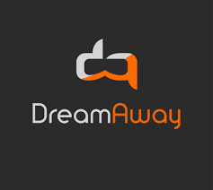
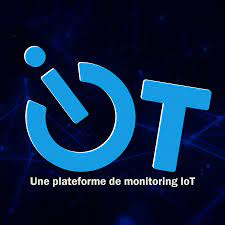
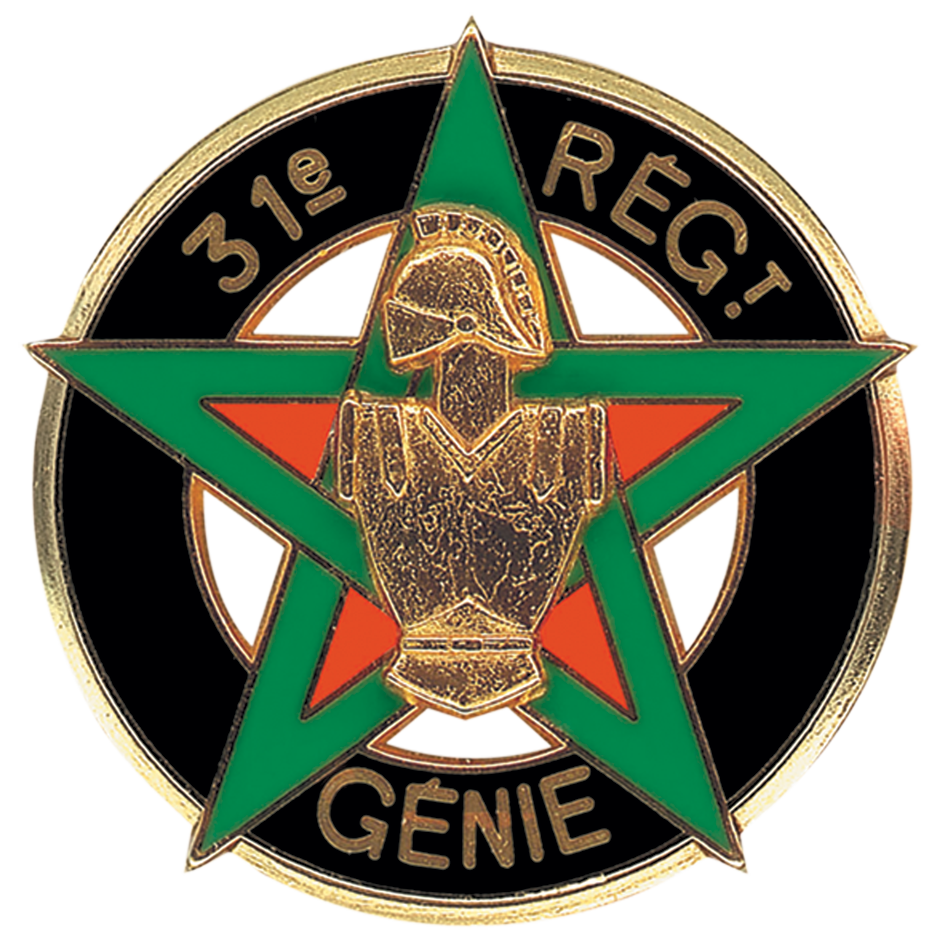

“Every day is a new experience, and each experience should inspire hope for a new day.”
Specialists in importing high-end vehicles from Germany and Sweden, monauto-mobile.com handles the entire process, from delivery to administrative management, providing customers with an optimal experience.
My role within the company has been as exciting as it has been versatile. As a manager, I have taken on multiple crucial facets of our business, demonstrating my ability to successfully lead diverse initiatives.
I was responsible for the strategic implementation of online advertisements, working diligently to enhance our visibility and attract new customers. My mission extended beyond mere acquisition, as I was committed to finding the perfect vehicle for each customer, with customization being our guiding principle.
The management of the entire administrative process, from purchase to customer delivery, was also an integral part of my responsibilities. I ensured a smooth and transparent process, providing our customers with a hassle-free experience from start to finish.
Customer retention has always been at the core of my approach. I implemented effective strategies to build lasting relationships, understanding the crucial importance of strong customer loyalty in our industry. Long-term customer satisfaction was my absolute priority.
Simultaneously, I took on the responsibility of the company's website, a vital showcase for our business. My role involved not only maintaining a high-performing online platform but also continually evolving it. I worked on optimizing the site, adding new features to stay at the forefront of market expectations.
My comprehensive experience, from managing advertisements to customer acquisition, from administrative management to customer retention, and from website optimization to adding new features, attests to my versatility and dedication to the overall success of our company.

Offering virtual reality experiences covering a variety of themes such as entertainment, culture, and education, DreamAway is present throughout France with 12 unique locations.
As a dedicated member of the DreamAway team, I've had the opportunity to contribute significantly to various aspects of the business. My responsibilities have focused on customer prospecting and retention, involving a versatile approach through phone, email, and direct contact.
A significant part of my role involved organizing exhibitions and demonstrations nationwide. This strategy aimed to increase the visibility of our services and create opportunities for in-person meetings, thereby strengthening connections with potential clients.
I was also involved in optimizing the operation of various rooms within our company, encompassing logistical coordination, efficient event planning, and resource management to ensure seamless operations.
Welcoming and assisting customers during their experiences were crucial aspects of my responsibilities. I actively worked to create a warm and welcoming environment, ensuring that each customer felt supported and appreciated throughout their experience with DreamAway.
As a trainer, I had the privilege of participating in first aid sessions using virtual reality. This innovative approach aimed to enhance first aid training by providing realistic and interactive simulations, thereby strengthening participants' skills and confidence.
My experience at DreamAway has been enriching, marked by a constant commitment to operational excellence, delivering an exceptional customer experience, and promoting innovation in the field of first aid training. I am proud to have contributed to the success of the company while upholding the values and goals of DreamAway.

Picard Surgelés, an iconic brand that has redefined the art of cuisine through innovation and quality, delivered directly to your doorstep. For decades, Picard Surgelés has established itself as the undisputed leader in the frozen gastronomy world, providing an infinite palette of flavors, textures, and delights at your fingertips, all without leaving the comfort of your home for an unparalleled culinary experience.
As a delivery driver, my role extended far beyond simply driving a vehicle. Each day, I served as the friendly face and crucial link between our company and our diverse clientele, ranging from individuals to daycare centers. Customer relations were at the core of my responsibilities, and I consistently ensured an exceptional delivery experience.
Endowed with a keen sense of organization, I meticulously planned my routes to ensure efficient distribution while meeting deadlines. This required precise coordination and effective resource management to address the diverse needs of our customer base.
Adhering to schedules was an absolute priority. I committed to delivering each order on time, recognizing the crucial importance of punctuality in the delivery world. Additionally, I was diligent in adhering to road safety rules, ensuring careful and secure driving for both myself and other road users.
Strict adherence to hygiene rules was also a responsibility I took to heart. I ensured that each delivery was made in accordance with the strictest hygiene standards, thereby guaranteeing the quality and integrity of the products I transported.
In summary, as a delivery driver, I was much more than just a driver. I was the essential link between our company and our customers, ensuring not only timely delivery but also maintaining high standards in terms of safety, organization, and hygiene. My commitment to these fundamental principles ensured a reliable and satisfying delivery experience for every recipient.

Explore the new frontiers of connectivity with Moneiot, revolutionizing data management from connected devices for businesses. Our innovative platform provides an unparalleled experience by facilitating the reading, modification, and sharing of data from a multitude of smart objects. Welcome to the era where intelligent connectivity meets professional efficiency.
As a web developer within the Moneiot team, I undertook diverse tasks contributing to the development of the front-end and back-end of the moneiot.com website. My primary responsibility was to design an interactive and functional platform dedicated to reading, sharing, and modifying data from connected objects. Here is a detailed overview of my missions:
Front-end and Back-end Development:
My central role involved designing and developing the front-end and back-end of the moneiot.com website. I utilized a set of languages, including HTML, CSS, and JavaScript for the front-end, and PHP, MySQL, and Laravel for the back-end. Every line of code was crafted with precision to ensure a smooth and efficient user experience.
Agile Teamwork (Scrum) with Jira:
I collaborated within an agile team using the Scrum methodology, a collaborative approach that promotes flexibility and responsiveness to changes. With the Jira tool, we planned our tasks, organized our sprints, tracked our progress, and ensured transparent communication among team members, thus fostering optimal efficiency in achieving goals.
Use of Virtual Machines under Ubuntu:
To ensure a consistent and efficient development environment, I worked with virtual machines under Ubuntu. This approach facilitated easy management of software dependencies, homogeneous configuration for the team, and optimization of hardware resources. The use of Ubuntu also enhanced the stability and security of our development environment.
Integration of Innovative Features:
In addition to technical aspects, I contributed to integrating innovative features on the site using languages such as PHP and JavaScript. This allowed users to explore, modify, and share data from connected objects in an intuitive manner.
Testing and Optimization:
Code quality was a constant concern. I actively participated in testing phases, ensuring the stability, security, and performance of the site. Test feedback was iteratively integrated to ensure continuous improvement.
In summary, using HTML, CSS, JavaScript, PHP, MySQL, and Laravel, I played a key role in creating a robust and modern platform at Moneiot. My involvement in front-end and back-end development, collaboration within the agile team with the Jira tool, and the use of virtual machines under Ubuntu contributed to the successful realization of moneiot.com, providing an advanced experience in IoT data management.

Highly strategic unit, the 31st RG combines technical expertise and unwavering commitment to unveil a fascinating panorama of varied skills, ranging from the construction of critical infrastructures to the management of emergency situations. Its missions, symbols of excellence, versatility, and dedication, are dedicated to the well-being and safety of the community. Welcome to a constantly evolving world, where each mission is a demonstration of competence and resilience.
As a military personnel within the prestigious 31st Engineer Regiment, my missions were as varied as they were crucial, involving a skillful combination of teamwork, stress management, respect for organization and command, as well as unwavering adaptability to diverse terrains, techniques, and working conditions.
Teamwork and Stress Management:
My role required close collaboration with my comrades within a tightly-knit team. Whether in the construction of defensive structures, detection of explosive devices, or other complex engineering missions, our ability to work synergistically was imperative. Operations demanded precise coordination, effective communication, and unwavering focus, especially in stressful situations.
Respect for Organization and Command:
Strict adherence to the sense of organization and command was at the core of my responsibilities. I had to follow orders and operational procedures with precision, thereby contributing to the cohesion and efficiency of the unit. Discipline, respect for hierarchy, and understanding of strategic objectives were key elements. I had to demonstrate an ability to manage tight deadlines, efficiently handle resources, and rigorously implement plans to ensure mission success.
Adaptation to Different Terrains, Techniques, and Working Conditions:
The 31st Engineer Regiment operates in a variety of terrains, ranging from urban areas to desert or forest environments. My training equipped me with skills to quickly adapt to these varied conditions. Whether using sophisticated equipment, implementing specialized construction techniques, or solving technical problems in the field, my adaptability was tested, showcasing my versatility as a member of the engineering unit.
In summary, as a military member of the 31st Engineer Regiment, my missions were characterized by intensive collaboration, rigorous execution of orders, and an exceptional ability to adapt to diverse environments. These combined skills were implemented in often demanding conditions, demonstrating my commitment to the mission and my essential contribution to the security and operational success of the unit.